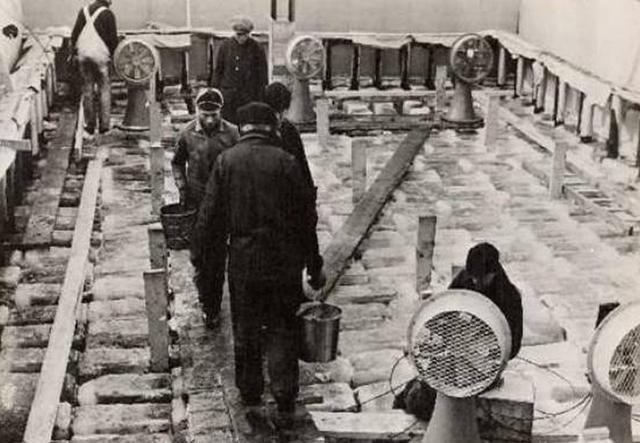

В 1942 году ситуация на западном фронте для Великобритании была катастрофической. Немецкие кригсмарине раз за разом наносили королевскому флоту существенные потери. Мощная промышленная база Германии позволяла стране быстро возмещать свои потери в технике, тогда как Великобритания, вступив в войну недостаточно подготовленной, рассматривала любые, даже самые безумные идеи, которые могли бы помочь ей противостоять противнику.
Одной из таких идей стал вариант создания авианосца, строительным материалом для которого послужил бы лед – временная замена стали, дефицит которой в то время достиг своего пика. Известно, что в 1942 году данная идея обсуждалась в высших кругах Соединенного Королевства, включая самого Уинстона Черчилля, исполнявшего тогда обязанности премьер-министра.
Разрабатывалось сразу два подхода к созданию авианосца изо льда. Первый – самый дешевый – заключался в спиливании верхушки крупного айсберга и переоборудовании его поверхности под взлетно-посадочную полосу. Предполагалось, что такие корабли, отличающиеся крайней дешевизной, будут использоваться для скоротечных воздушных операций против стратегических объектов противника. Такой айсберг-авианосец также должен был быть оснащен системами обороны, жилыми отсеками и двигателем с рулями управления. Время использование такого корабля ограничивалось бы несколькими месяцами.
Второй подход предполагал создание авианосца с нуля из заранее подготовленных ледяных блоков, между которыми пролегали бы трубы холодильных установок, что позволяло бы кораблю не таять и выполнять свои функции длительное время.
После долгих обсуждений британское министерство обороны выбрало именно второй вариант, как наиболее перспективный. Руководителем проекта был назначен инженер Джеффри Пайк. Экспериментально он установил, что если смешать воду с целлюлозой, то после заморозки получается лед, превосходящий по прочности обычный и дольше не поддающийся таянию. Новый материал, который, как выяснилось позже, обладал еще и большей плавучестью, решено было назвать «pykret». К британскому проекту привлекли американских и канадских союзников, и вскоре тестовый образец корабля всего за два месяца построили и спустили на воду в Канаде, где начались его испытания.
К 1943 году 18-метровое судно было успешно протестировано в летних условиях, но у английского адмиралтейства возникло несколько вопросов к инженерам: они просили увеличить прочность палубы для посадки тяжелых бомбардировщиков и оснастить судно дополнительной защитой против торпед немецких субмарин. Для этих доработок необходимо было усиливать металлический каркас судна, что выливалось в дополнительные денежные, а главное временные затраты. Проект уже не казался панацеей от превосходства Германии на море, тем более что к концу 1943 года ситуация в войне обернулась в пользу союзников. Британии наконец-то удалось преодолеть дефицит стали и наладить выпуск дешевых авианесущих кораблей. Необычный проект был постепенно забыт и остался лишь в виде чертежей. Тестовый же экземпляр корабля вскоре растаял, оставив после себя металлический каркас-скелет.
В начало